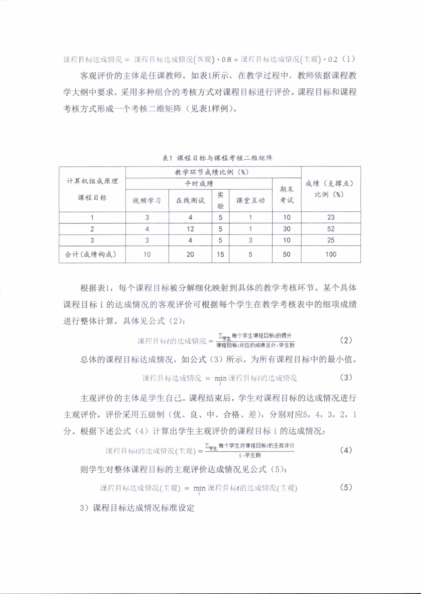

图 B：制度办法复杂页面本地解析对比
第 1 行展示扫描型标题条款页，第 2 行展示表格与公式混排页，均使用项目中的真实输出结果。
第 1 行：制度办法第 1 页，标题条款页
原始 PDF 第 1 页
扫描型标题条款页，关注页眉、标题与一级条款。
pdftotext -layout
第 1 页真实输出结果。
缺失：未获得可用输出。
MinerU2.5
第 1 页结构化文本摘录。
上海海洋大学信息学院课程质量评价办法 课程质量评价是教学过程质量监控的核心内容，实质是评价课程目标的达成情况，而课程目标达成评价又是毕业要求达成评价的重要依据。为确保课程质量评价工作的规范化、制度化，增强课程质量评价工作的客观性、科学性和可操作性，特制定本办法。 一、评价对象及周期 二、评价机构 评价机构：专业达成评价工作组 三、评价依据 专业培养方案和课程教学大纲。 四、评价内容 1）理论课程教学 ① 理论课程教学评价
第 2 行：制度办法第 4 页，公式与表格混排页
原始 PDF 第 4 页
表格与公式混排页，关注表 1 及后续公式区域。

MinerU pipeline
第 4 页表格与公式摘录。
表 1 课程目标与课程考核二维矩阵
| 计算机组成原理课程目标 | 教学环节成绩比例（%） | 成绩(支撑点)比例(%) | ||||
| 平时成绩 | 期末考试 | |||||
| 视频学习 | 在线测试 | 实验 | 课堂互动 | |||
| 1 | 3 | 4 | 5 | 1 | 10 | 23 |
| 2 | 4 | 12 | 5 | 1 | 30 | 52 |
| 3 | 3 | 4 | 5 | 3 | 10 | 25 |
| 合计(成绩构成) | 10 | 20 | 15 | 5 | 50 | 100 |
课程目标达成情况=课程目标达成情况(客观）\*0.8+课程目标达成情况(主观)\*0.2（1)
客观评价的主体是任课教师。如表1所示，在教学过程中，教师依据课程教学大纲中要求，采用多种组合的考核方式对课程目标进行评价。课程目标和课程考核方式形成一个考核二维矩阵（见表1样例）。
根据表1，每个课程目标被分解细化映射到具体的教学考核环节。某个具体课程目标i的达成情况的客观评价可根据每个学生在教学考核表中的细项成绩进行整体计算，具体见公式（2）：
$$
\begin{array} { r } \downarrow \downarrow \downarrow \downarrow \dot { \mathcal { H } } \dot { \mathcal { F } } \dot { \Xi } \equiv \dot { \mathcal { W } } \dot { \Xi } \dot { \mathcal { H } } \dot { \Xi } \dot { \mathcal { H } } \dot { \Xi } \dot { \mathcal { H } } \dot { \Xi } \dot { \mathcal { H } } \dot { \Xi } \dot { \mathcal { H } } \dot { \Xi } \dot { \mathcal { H } } \dot { \Xi } \dot { \mathcal { H } } \dot { \Xi } \dot { \mathcal { H } } \dot { \Xi } \dot { \mathcal { H } } \dot { \Xi } \dot { \mathcal { H } } \dot { \Xi } \dot { \mathcal { H } } \dot { \Xi } \dot { \mathcal { H } } \dot { \Xi } \dot { \mathcal { H } } \dot { \Xi } \dot { \mathcal { H } } \dot { \Xi } \dot { \mathcal { H } } \dot { \Xi } \dot { \mathcal { H } } \dot { \Xi } \dot { \mathcal { H } } \dot { \Xi } \dot { \mathcal { H } } \dot { \Xi } \dot { \mathcal { H } } \dot { \Xi } \dot { \Xi } \dot { \mathcal { H } } \dot { \Xi } \dot { \Xi } \dot { \mathcal { H } } \dot { \Xi } \dot { \Xi } \dot { \Xi } \dot { \Xi } \dot { \Xi } \dot { \Xi } \dot { \Xi } \dot { \Xi } \dot { \Xi } \dot { \Xi } \dot { \Xi } \dot { \Xi } \dot { \Xi } \dot { \Xi } \dot { \Xi } \dot { \Xi } \dot { \Xi } \dot { \Xi } \dot { \Xi } \dot { \Xi } \dot { \Xi } \dot { \Xi } \dot { \Xi } \dot { \Xi } \dot { \Xi } \dot { \Xi } \dot { \Xi } \dot { \Xi } \dot { \Xi } \dot { \Xi } \dot { \Xi } \dot { \Xi } \dot { \Xi } \dot { \Xi } \dot { \Xi } \dot { \Xi } \dot { \Xi } \dot { \Xi } \dot { \Xi } \dot { \Xi } \dot { \Xi } \dot { \Xi } \dot { \Xi } \dot { \Xi } \dot { \Xi } \dot { \Xi } \dot { \Xi } \dot { \Xi } \dot { \Xi } \dot { \Xi } \dot { \Xi } \dot { \Xi } \dot \end{array}\tag{2}
$$
公式片段 1
$$
\begin{array} { r } \downarrow \downarrow \downarrow \downarrow \dot { \mathcal { H } } \dot { \mathcal { F } } \dot { \Xi } \equiv \dot { \mathcal { W } } \dot { \Xi } \dot { \mathcal { H } } \dot { \Xi } \dot { \mathcal { H } } \dot { \Xi } \dot { \mathcal { H } } \dot { \Xi } \dot { \mathcal { H } } \dot { \Xi } \dot { \mathcal { H } } \dot { \Xi } \dot { \mathcal { H } } \dot { \Xi } \dot { \mathcal { H } } \dot { \Xi } \dot { \mathcal { H } } \dot { \Xi } \dot { \mathcal { H } } \dot { \Xi } \dot { \mathcal { H } } \dot { \Xi } \dot { \mathcal { H } } \dot { \Xi } \dot { \mathcal { H } } \dot { \Xi } \dot { \mathcal { H } } \dot { \Xi } \dot { \mathcal { H } } \dot { \Xi } \dot { \mathcal { H } } \dot { \Xi } \dot { \mathcal { H } } \dot { \Xi } \dot { \mathcal { H } } \dot { \Xi } \dot { \mathcal { H } } \dot { \Xi } \dot { \mathcal { H } } \dot { \Xi } \dot { \Xi } \dot { \mathcal { H } } \dot { \Xi } \dot { \Xi } \dot { \mathcal { H } } \dot { \Xi } \dot { \Xi } \dot { \Xi } \dot { \Xi } \dot { \Xi } \dot { \Xi } \dot { \Xi } \dot { \Xi } \dot { \Xi } \dot { \Xi } \dot { \Xi } \dot { \Xi } \dot { \Xi } \dot { \Xi } \dot { \Xi } \dot { \Xi } \dot { \Xi } \dot { \Xi } \dot { \Xi } \dot { \Xi } \dot { \Xi } \dot { \Xi } \dot { \Xi } \dot { \Xi } \dot { \Xi } \dot { \Xi } \dot { \Xi } \dot { \Xi } \dot { \Xi } \dot { \Xi } \dot { \Xi } \dot { \Xi } \dot { \Xi } \dot { \Xi } \dot { \Xi } \dot { \Xi } \dot { \Xi } \dot { \Xi } \dot { \Xi } \dot { \Xi } \dot { \Xi } \dot { \Xi } \dot { \Xi } \dot { \Xi } \dot { \Xi } \dot { \Xi } \dot { \Xi } \dot { \Xi } \dot { \Xi } \dot { \Xi } \dot { \Xi } \dot { \Xi } \dot \end{array}\tag{2}
$$
公式片段 2
$$
\Zeta _ { \mathrm { R } } ^ { \prime } \boxed { \pm \sqrt { 2 } } \ z b \dot { z } \dot { z } \boxed { \sqrt { 2 } } \ z \ m \dot { z } \dot { \sqrt { 2 } } \ z \ = \ \operatorname* { m i n } _ { i } \ Z h _ { \mathrm { R } } ^ { \prime } \boxed { \pm \sqrt { 2 } } \ \boxed { \pm \sqrt { 2 } } \ z h _ { \mathrm { R } } ^ { \prime } \boxed { \sqrt { 2 } } \ z \ a \dot { \chi } \boxed { \pm \sqrt { 2 } } \ \Omega\tag{3}
$$
MinerU2.5
第 4 页表格与公式摘录。
表 1 课程目标与课程考核二维矩阵
| 计算机组成原理 课程目标 | 教学环节成绩比例（%） | 成绩（支撑点） 比例（%） | ||||
| 平时成绩 | 期末考试 | |||||
| 视频学习 | 在线测试 | 实验 | 课堂互动 | |||
| 1 | 3 | 4 | 5 | 1 | 10 | 23 |
| 2 | 4 | 12 | 5 | 1 | 30 | 52 |
| 3 | 3 | 4 | 5 | 3 | 10 | 25 |
| 合计（成绩构成） | 10 | 20 | 15 | 5 | 50 | 100 |
课程目标达成情况 $=$ 课程目标达成情况（客观） $^ \text{念}$ 0.8+课程目标达成情况（主观） $^ { \text{念} } 0 . 2$ （1）
客观评价的主体是任课教师。如表1所示，在教学过程中，教师依据课程教学大纲中要求，采用多种组合的考核方式对课程目标进行评价。课程目标和课程考核方式形成一个考核二维矩阵（见表1样例）。
根据表1，每个课程目标被分解细化映射到具体的教学考核环节。某个具体课程目标i的达成情况的客观评价可根据每个学生在教学考核表中的细项成绩进行整体计算，具体见公式（2）：
$$
\text {课 程 目 标} i \text {的 达 成 情 况} = \frac {\sum_ {\text {学 生}} \text {每 个 学 生 课 程 目 标} i \text {的 得 分}}{\text {课 程 目 标} i \text {对 应 的 成 绩 总 分} * \text {学 生 数}} \tag {2}
$$
公式片段 1
$$
\text {课 程 目 标} i \text {的 达 成 情 况} = \frac {\sum_ {\text {学 生}} \text {每 个 学 生 课 程 目 标} i \text {的 得 分}}{\text {课 程 目 标} i \text {对 应 的 成 绩 总 分} * \text {学 生 数}} \tag {2}
$$
公式片段 2
$$
\text {课 程 目 标 达 成 情 况} = \min _ {i} \text {课 程 目 标} i \text {的 达 成 情 况} \tag {3}
$$